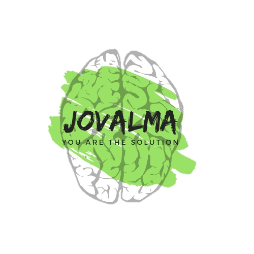
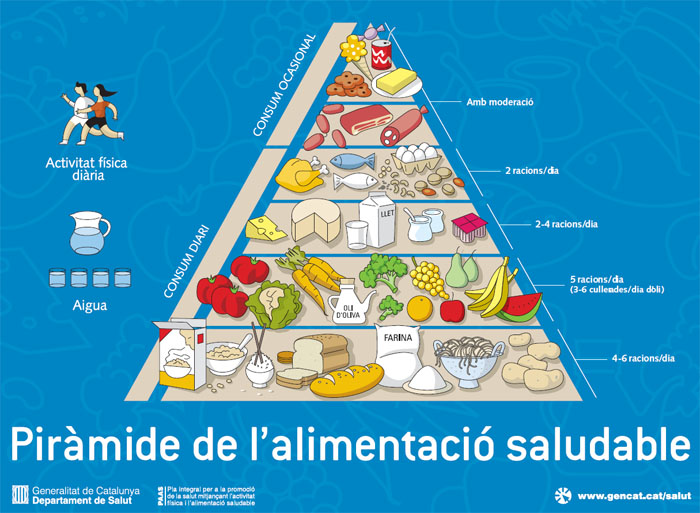

PIRÁMIDE DE LA ALIMENTACIÓN SALUDABLE
La forma triangular de la pirámide nutricional nos orienta sobre la frecuencia y las cantidades que debemos consumir de diferentes alimentos. En los primeros eslabones, se sitúan los alimentos que más peso deben tener en la alimentación diaria. A medida que vamos subiendo de niveles, aparecen otros alimentos que hay que consumir en menor cantidad.
En el vértice se sitúan alimentos de consumo opcional y que en caso de consumirse, debe ser ocasionalmente.

ALIMENTOS EN DIFERENTES NIVELES
La pirámide nutricional, también conocida como pirámide alimentaria o pirámide alimentaria, es usualmente el método utilizado para sugerir la variedad de alimentos a consumir en forma cotidiana.
Lo que propone la pirámide es la distribución por consumo del tipo o grupo de alimentos que la componen en propociona similares a la de las capas o escalones.
- Los escalones inferiores proponen mayoritariamente hidratos de carbono complejos.
- Los escalones centrales sugieren alimentos que contienen menor cantidad de hidratos de carbono,más proteínas y grasas y gran contenido vitamínico.
- Los escalones superiores, de abajo arriba, contienen cantidad de proteínas y cantidad de grasas.
- El escalón más alto contiene mayormente grasas e hidratos de carbono simples,todos alimentos que aportan principalmente calorías; y que por eso se recomiendan en menor cantidad.
En menor cantidad: Azúcares simples y grasas
- Grasas y Dulces, mantequilla, mantequilla, natillas, mermeladas, jaleas, chocolates, miel, toritas, helados, postres, etc.
Alimentos con proteínas:
- Carnes vacunas, de cerdo, cabra, pollo, embutidos, carnes frías, pescado, mariscos, calamares, quesos duros, semiduros, blandos, de untar y otros lácteos y huevos.
Alimentos ricos en vitaminas y minerales:
- Verduras, hortalizas, tubérculos, frutas y frutos secos.
Carbohidratos complejos:
- Cereales, legumbres, granos, harinas y derivados: Arroz, panes, galletas, pastas, sémolas, etc.
Reglas básicas de nutrición
- Beber 1,5L - 2L de agua al día.
- 60 minutos de actividad física al día.
- Consumir gran variedad de alimentos.
- Equilibrar los alimentos que consumimos con la actividad física, para mantener y / o mejorar el peso corporal.
- Ingerir mayoritariamente cereales integrales, frutas y verduras.
- Mantener una dieta baja en grasas saturadas y colesterol.
- Seguir una dieta moderada en azúcares.
- Seguir una dieta baja o moderada en sal (sodio).
La cantidad o número de porciones de cada alimento que una persona debe consumir depende de diversos factores personales:
- El peso
- La edad
- El sexo
- La actividad física
Porciones recomendadas
- Pan, cereales, pasta y arroz: 6/11 porciones al día.
1 porción equivale a: 1 rebanada de pan, ½ taza de pasta o cereal cocidos, 28 gr de cereal listo para comer, ½ panecillo, 3-4 galletas tipo crackers pequeñas.
- Verduras: 3/5 porciones al día.
1 porción equivale a: ¾ taza de caldo de zumo de verduras, ½ taza de verduras cocidas, 1 taza de verduras crudas, ½ tazas de legumbres y guisantes cocidos.
- Frutas: 2/4 porciones al día.
1 porción equivale a: 1 unidad de tamaño medio, 1 corte de melón, ½ taza de fresas, 3/4 taza de jugo, ½ taza de fruta enlatada o en dados.
- Leche, yogur o quesos: 2/3 porciones al día.
1 porción equivale a: 1 taza de leche o yogur, 60 gr de queso blando o 50 gr de queso.
- Carne, aves, pescado, huevos, judías secas y nueces: 2/3 porciones al día.
1 porción equivale a: 70 gr de carne a la plancha, aves o pescado (un total diario de 150-200 gr), 1 huevo, ½ taza de legumbres cocidas, 30 gr de frutos secos.
- Grasas, aceites y dulces consumir ocasionalmente.
Son alimentos altos en grasas: margarina, mantequilla, mayonesa, natas, quesos cremosos, salsas.
En este punto podemos aclarar que la pirámide no distingue entre los diferentes tipos de grasas, pero si recomienda un bajo nivel de consumo total.
Por otro lado aconseja aumentar el consumo de aceite de oliva, dada su relación con un bajo riesgo de padecer enfermedades crónicas.
Son alimentos altos en azúcar: caramelos, golosinas, frutas en almíbar, refrescos y zumos comerciales, pasteles, azúcar, miel, jarabes y mermeladas.
CONSEJOS RELACIONADOS CON LOS ESTILOS DE VIDA
Los consejos relacionados con los estilos de vida saludable que tienen un impacto superior al 40% en la form de enfermar o de morir en los países más desarrollados, son los siguientes:
- Actividad física: El ejercicio diario ya era una recomendación, pero ahora se concreta en dedicarle una hora al día. 10.000 pasos diarios puede ser un marco de referencia.
- Equilibrio emocional: Nuestro estado de ánimo condiciona nuestras necesidades alimentarias. La tristeza puede quitarnos el apetito y la ansiedad puede hacer que comemos compulsivamente. Pero también el estado emocional se refleja a la hora de comprar, de elegir, de cocinar y de consumir. Por eso es importante el concepto de "alimentación consciente" o intentar dejar de lado el estado de ánimo cuando hablamos de alimentarnos.
- Balance energético: Importante el equilibrio entre la ingesta energética (lo que comemos) y el gasto energético (lo que gastamos a través del metabolismo basal, la termogénesis y la actividad física). En este equilibrio influyen factores como el tamaño de la ración, la frecuencia de consumo (es aconsejable fraccionar la ingesta total en 5 tomas diarias) o la cronobiologia: la importancia del momento para ingerir. Por ejemplo, hay evidencia de que la ingesta tiene una mayor rendimiento metabólico a primera hora del día, de ahí la importancia del desayuno.
- Técnicas culinarias saludables: Cómo cocinamos repercutirá en nuestra salud. La técnica de cocina sana más efectiva es la cocción al vapor, pero también los hervidos, la plancha o el horno siempre mejor que la fritura. Es importante que los recipientes no transfieran ningún elemento a los alimentos. Y para evitarlo lo mejor es el vidrio. En cuanto a las herramientas para manipular alimentos (espumaderas, cucharas ...) las más adecuadas son las de silicona, que evitan levantar el teflón de las sartenes. Las cucharas de madera también son aconsejables, pero deben lavarse en el lavavajillas al menos una vez a la semana para eliminar posibles hongos.
- Beber agua: Entre 4 y 6 vasos al día de agua, como mínimo, y completar con otros líquidos hasta alcanzar, como media al día, los 2 litros aproximadamente.